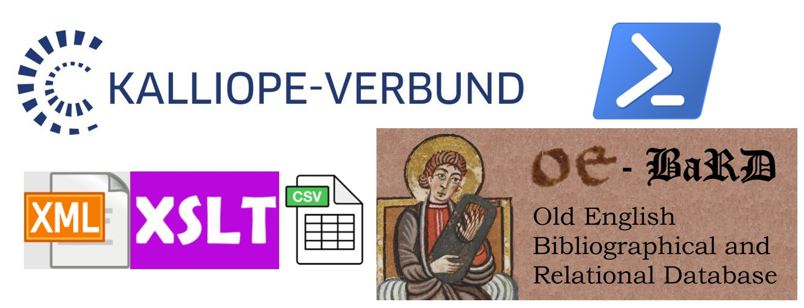
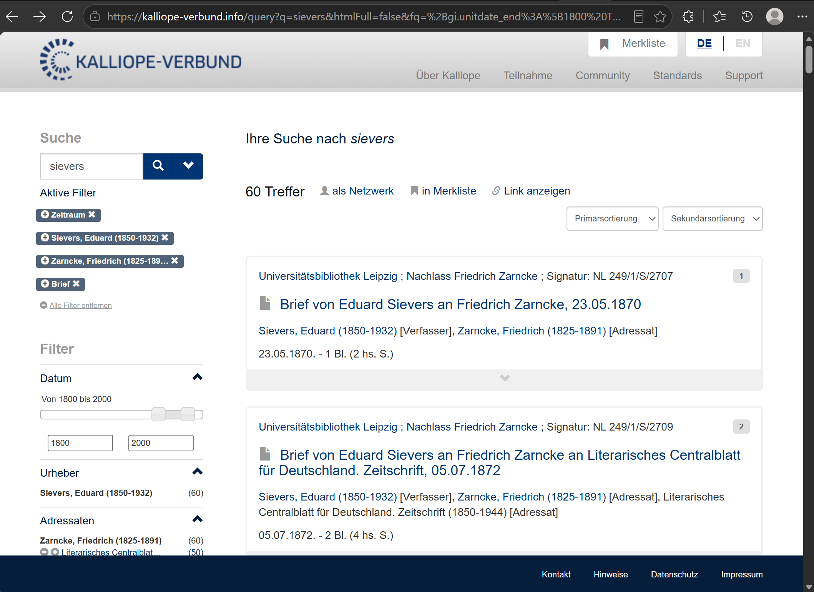
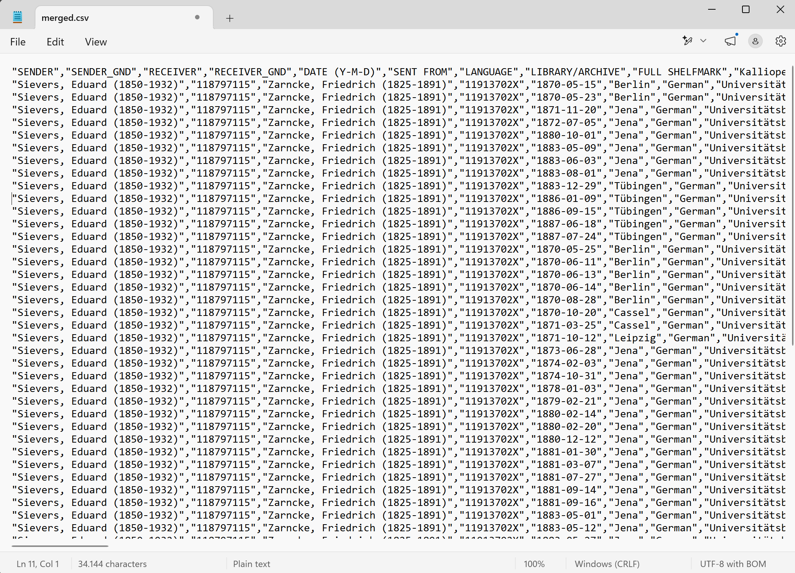
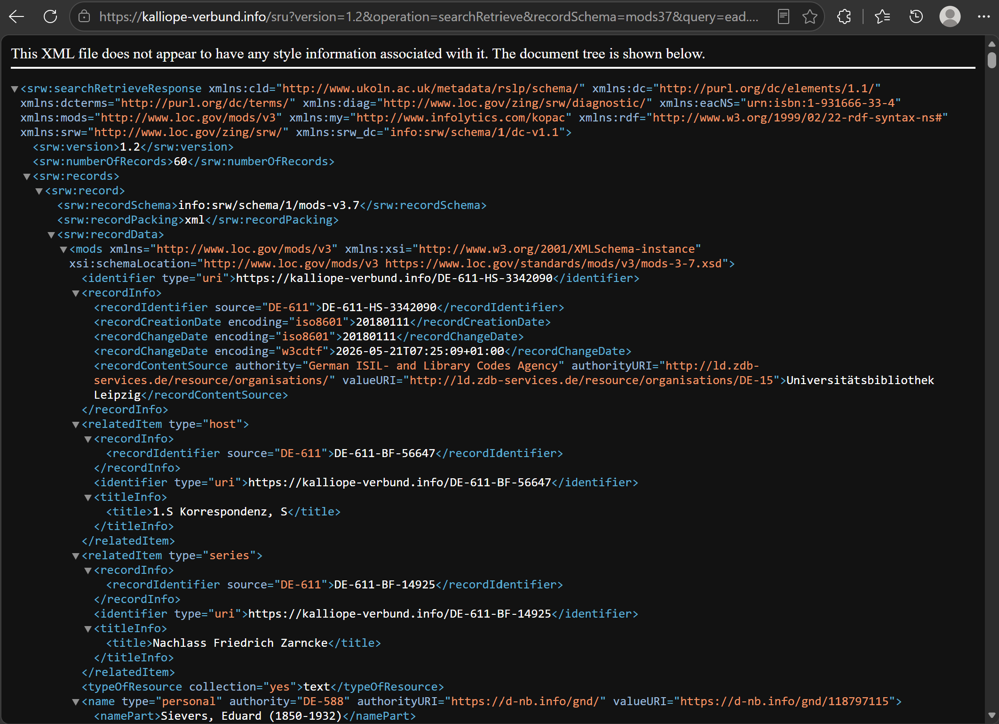

A Digital Endeavour Involving Databases, Lookups,
and Automated Retrieval Using Powershell Scripts
By: Sander Stolk; Date: 12 August 2026.
For centuries, letter-writing has been essential in maintaining and fostering scholarly collaboration. In the 19th century, scholars increasingly corresponded on the topic of early medieval English language and literature. Gathering data on such letters and the correspondence networks of 19th-century European scholars helps us in pinpointing what they found important, whose voices were impactful, and how Old English Studies emerged as an established, well-recognised academic field. But how to keep track within the EMERGENCE project of all these letters and the vast scholarly networks, and how can we incorporate already curated information on them into the project instead of having to start from scratch? In this blog post, I will offer a glimpse into some of the digital aspects of the EMERGENCE project and its utilization of the Kalliope Union Catalog.
As part of the EMERGENCE project, a database is used to keep track of – and analyse! – biographical information on 19th-century scholars, their publications, and their correspondence concerning Old English. This database is known as OE-BaRD, an abbreviation of Old English Bibliographical and Relational Database, and will be released at the end of the project to the public and for other researchers to consult and be able to delve further into the origins of Old English Studies.
Filling the database with relevant content takes time and effort: which libraries, archives, museums, etc. contain relevant letters, and how can we access them? The EMERGENCE team is hard at work to obtain relevant material and enter it into the project database. One important resource that we have consulted is the Kalliope Union Catalog, which catalogues personal papers from a large number of institutions, and gives us a wealth of curated information on letters in a digital format. That is to say, every letter recorded in Kalliope is described with rich metadata, which state aspects such as the author of the letter, the addressee, the language used, its date, and the physical location where it is currently held. These metadata are extremely useful for the purpose of the EMERGENCE project. The two main challenges here are: (1) how to search for the letters within Kalliope that are relevant to our project and (2) how to acquire relevant metadata from Kalliope in a digital format that will eventually allow us to easily import this information into our own database?
Searching the Kalliope Union Catalog is relatively easy, thanks to the rich metadata it contains and the website through which it can be accessed.1 The Kalliope website sports advanced search and filter functionalities that facilitate locating the items in which one is interested. When 19th-century scholars of interest have been identified in the EMERGENCE project by one of the team members, that scholar can be searched for within the catalogue using their name (e.g., Eduard Sievers) and limiting the type of item to letters and the date range to the period of our interest within the project (i.e., the 19th-century).

Figure 1. Website search results in Kalliope Union Catalog for letters sent by Eduard Sievers between 1800 and 2000 and received by Friedrich Zarncke.
When an EMERGENCE team member has searched the catalogue and found records that they believe should be part of the research project, those search results are still to be incorporated into OE-BaRD (i.e., the EMERGENCE database). Preferably, that process of incorporating the data is accomplished in an automated manner, as the alternative of manually copying and then pasting each piece of metadata for each individual record that was found can cost a lot of time and effort, not to mention being rather repetitive and tedious. The example search shown in Figure 1, for instance, would require separately 720 pieces of metadata if done manually – and that is for only a single search (and a small one of that) of which the results were deemed relevant for the project. In other words, best to be avoided if possible!
As part of my work for the project, I developed a number of scripts that automate this process and allows a user to generate a CSV file with all relevant information from Kalliope within a matter of minutes, if not seconds:

Figure 2. CSV file with metadata obtained from an SRU search in Kalliope Union Catalog, created through automated fetching of the metadata and subsequent transformation of the digital format from XML to CSV.
The remainder of this blog post discusses how I was able to do so!
Thankfully, the brilliant team at the Kalliope Union Catalog have made their catalogue available also via a so-called Search/Retrieval via URL, or SRU.2 Whereas the website is suitable for people to search and navigate content, SRU is especially suited for software applications that need to interact with the catalogue and retrieve metadata. Metadata is stored in so-called records; each catalogued letter is described in its own record. Lookups using the SRU return digital messages over HTTP, the protocol that allows one to access content on the Internet; instead of being used to return a webpage, the HTTP protocol is used by SRU to return records, which are described in the machine-readable XML file format (see image below). It is exactly this setup that serves well for automated incorporating metadata on a subset of letters into the OE-BaRD and for which I have created a set of scripts to facilitate the work.

Figure 3. SRU search results in Kalliope Union Catalog for letters sent by Eduard Sievers between 1800 and 2000 and received by Friedrich Zarncke.
There are three main steps needed in incorporating Kalliope records into OE-BaRD. Firstly, searches of the team members need to be translated into SRU requests. Secondly, the results of an SRU request should be fetched. Lastly, the retrieved records should be transformed into a digital format that is supported by our own database (in our case: a simple CSV file). The majority of the pieces of metadata on letters are the same in both databases, so apart from having to transform the digital format, no steps are needed to augment Kalliope data before it can be imported into OE-BaRD.
I decided on using the PowerShell scripting language for automating these steps.3 PowerShell has the advantage for our project team that it is available for most operating systems and comes pre-installed on Windows. The resulting scripts have been made publicly available on our EMERGENCE GitHub repository, under the GPL-3.0 licence.4 Separate scripts take care of different steps in the process. The observant reader will notice, though, that there are more than three scripts, an indication that some of the main steps in automation that were described above needed to be broken down into substeps – mainly for technical reasons. For convenience, it is possible to simply run the script kalliope-letters2csv.ps1 for a specific Kalliope website search for letters. Doing so will fetch and transform Kalliope data on, utilizing all other scripts in the correct order, and output the results in the CSV file format, which is tabular in nature and can be read in software applications such as LibreOffice and MS Excel.5
Now, let us delve into the magnificent world of digital automation and learn more about what the scripts do, why they are needed, and how they go about it!
Step 1: Translating Kalliope website searches to SRU lookups
As mentioned earlier, the first main step in incorporating Kalliope records is to translate searches of the EMERGENCE team members into SRU requests. The script kalliope-site2sru.ps1 takes care of that translation. A website search in the Kalliope Union Catalog will be reflected in the address bar of the browser: opening that same address in another browser will open the same search. This address, or URL, can be used as input to the script, which literally rewrites it to an SRU address. The script uses so-called Regular Expressions to (1) change the location from the Kalliope website to the SRU access location, and (2) rewrite search filters from the website to how they are formulated for SRU.
Step 2: Fetching search results from SRU
Whereas the first main automation step is performed by only a single script, the second step is taken care of by two separate scripts. Why is this? Can one not simply download the records from the SRU lookup address that resulted from the translation? The answer is no, not really, and for good reason. The Kalliope Union Catalog is vast. It contains an incredible number of records. Even a single search can sport so many records that retrieval will not be able to be completed because of the sheer amount of time that it takes to fetch it in one go – a so-called timeout for a request. To avoid timeouts, Kalliope offers search results over different pages whenever the number of records yielded is considered too large. Such a paging mechanism is not just present with SRU lookups, but also on the Kalliope website. In effect, that means it is necessary to obtain the separate pages… well… separately. But how many pages are we to fetch in an automated manner? To answer that question, the script kalliope-recordcount.ps1 first does a SRU lookup for a specific search and returns how many records there are for the result. The number of pages to fetch can then be determined by dividing that number with how many records a page can contain. With that knowledge, the script fetch-pages.ps1 goes to work and fetches all the pages for that SRU lookup. The script does so by adding two parameters at the end of the SRU address: `maximumRecords`, to set the maximum number of records per page to a number that is unlikely to result in a time-out, and `startRecord` to indicate at which lookup result we would like to start fetching the page, which will need to start at 1 and be increased by `maximumRecords` each time a next page is fetched.
Step 3: Transforming the digital format from XML to CSV
The last step, transforming the Kalliope metadata format (the XML format) to one that OE-BaRD can ingest (the CSV format), is again divided over two scripts. As you may be able to guess, this is again due to the paging mechanism of Kalliope SRU. After all, we will now have downloaded separate pages of results rather than a single one, so how to deal with that? There are two possibilities, really: first merge all results and then transform the format, or first performing the transformation on each page and then merging the results. For our purposes, the second approach is more straightforward, due to the structure of the digital format not containing an intricate hierarchy after the transformation.
The xslt-transform-dir.ps1 script transforms all XMLs in a directory using a specified XSLT stylesheet. XSLT is a standardized format for transforming XML files and indicates what hierarchical elements from an XML file should be selected and how they should be present in the outcome. As you can imagine, the CSV file structure targeted by default, using the file kalliopeLetters2csv.xslt, is specifically set up to facilitate importing the data into OE-BaRD, although the resulting CSV structure may well be useful for other projects too. The CSV file format is a simpler one than XML, not sporting a hierarchy of information elements, but acting as a tabular format in which each line represents a table row with commas separating the columns. The XSLT used in the EMERGENCE project creates a CSV row for each ‘mods’ element found in the XML hierarchy, which we select with the following path, in which forward slashes denote the next level in the hierarchy:
| “srw:searchRetrieveResponse/srw:records/srw:record/srw:recordData/mods:mods” |
For each CSV row, the individual columns are then populated by the XSLT.
The “SENDER” column, for instance, is filled with XML data on names
associated with a creator role, like this (where 'cre' stands for creator,
which is the way Kalliope describes the writers of letters):
| “mods:name[mods:role/mods:roleTerm='cre']/mods:namePart” |
After the transformation from XML to CSV has been executed for
all SRU pages that have been fetched, the
merge-csvs-dir.ps1 script then allows one to merge all CSVs
in a directory into a single CSV file, which comes down to simply adding
all lines to a single file. As mentioned, software applications such as
LibreOffice and MS Excel can easily read this file structure and assist
users with sorting and filtering the data.
In the case of the EMERGENCE project, the process of importing these CSV files into our database is a straightforward one. The automated steps of retrieving and transforming Kalliope Union Catalog metadata on letters is an enormous time-saver in the project and means we are able to include more content than otherwise would have been the case – expanding our search for letters elsewhere that may not yet have been described so thoroughly in a digital format. Moreover, as these PowerShell scripts maintain links to the source, the EMERGENCE project can direct those interested back to the wonderful Kalliope Union Catalog or any of the other sources used, where users may obtain further information, perhaps see a scan of the letter in question, or simply see the metadata in their original context. It is through such reuse and interlinking of resources that research can truly prosper and ascend the means available within a single research project. Of course, anyone can benefit from such resources that are openly available (provided they adhere to the licences under which the material is available, of course, and give credit where credit is due). Make the most of them: use and reuse the Kalliope Union Catalog data, use and adapt the kalliope2csv scripts. Be creative, dare to go digital, and in case of questions or doubt… reach out! People behind publicly available resources tend to love nothing more than to see them used and are happy to answer questions. I know I am.
Feel free to look at, download, and play with our kalliope2csv scripts on GitHub.
Additionally, the Programming Historian is an excellent resource with lessons on various digital topics. The lessons that are related to our work with Kalliope are an introduction to PowerShell, an explanation of query strings for downloading multiple records from internet databases, and a tutorial to transform XML data using XSLT.
This author is grateful to the team behind Kalliope Union Catalog, who have made available a superb resource with the metadata within under open licence, and were kind enough to answer a number of questions. I am also thankful for being part of the EMERGENCE team, who are enthusiastic about delving into historical material and not shying away from any of the digital aspects together with me – it is a pleasure working with you.
This blog post is part of a project that has received funding from the European Research Council (ERC) under the European Union’s Horizon Europe research and innovation program (EMERGENCE, Grant agreement No.101115867, https://doi.org/10.3030/101115867 ). Funded by the European Union. Views and opinions expressed are however those of the author(s) only and do not necessarily reflect those of the European Union or the European Research Council Executive Agency. Neither the European Union nor the granting authority can be held responsible for them.
https://kalliope-verbund.info/en/index.html↩︎
https://kalliope-verbund.info/en/standards/sru.html↩︎
Readers using MS Excel be warned, though. CSV files are at the time of writing still not opened correctly in Excel when double-clicking on the file or pressing Enter to open it. (Microsoft has ignored the issue of not loading in CSV files properly for as long as I can remember.) Instead, the software application requires users to first open Excel, open a blank workbook, select the Data tab in the main menu at the top, and then use the “From Text/CSV” option to select and load the CSV file properly. Unsurprisingly, many people working with CSV files use other software applications to do so, most of which directly open CSV files correctly. It is, after all, a simple, straightforward format that has been standardized for two decades and been around even longer.↩︎